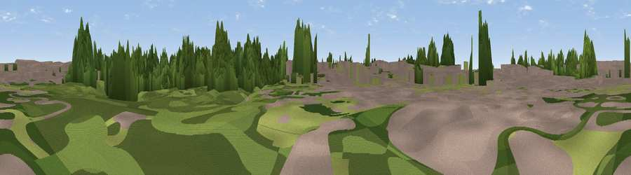

Okus Hill
#37106 in England · top 75% of its area beats it · near SwindonWhere it is
The exact computed spot (SU 14992 83582). Click the marker for map links.
The view, rendered

A 360° render of this exact spot computed from the terrain model, tree cover and land cover — summer colours, afternoon light, calibrated against photographs of famous viewpoints. Real trees, hedges and buildings will differ in detail.
The panorama
Grey silhouette: terrain skyline in each direction (720 bearings, Earth curvature and refraction included). Dashed green: skyline with trees (+15 m) and buildings (+8 m) as obstacles. Blue strip: how far the ground is visible on each bearing.
Where the view opens
Wedge length = distance to the farthest visible ground on that bearing (vegetation-aware). Rings at 10, 25 and 50 km.
What fills the view
51% woodland · 22% grassland · 19% built-up · 8% cropland
Angular shares of the visible panorama (visual magnitude), not map area. Landscape diversity 0.52 (0–1 Shannon).
Key numbers
More beautiful places nearby
The staircase of upgrades: each row has a higher view potential than everything closer. Driving times are estimates from straight-line distance, calibrated against real road routing — check an actual route before setting out.
| Place | Direction | Drive | Score |
|---|---|---|---|
| Viewpoint near Swindon | W · 1 km | ~3 min | 40.4 |
| Viewpoint near Chiseldon | SE · 3 km | ~8 min | 55.9 |
| Viewpoint near Wroughton | SSE · 3 km | ~8 min | 61.4 |
| Viewpoint near Broad Town | SW · 6 km | ~13 min | 65.8 |
| Viewpoint near Liddington | ESE · 7 km | ~15 min | 73.4 |
| Viewpoint near Liddington | ESE · 7 km | ~15 min | 74.4 |
| Viewpoint near Woolstone | E · 15 km | ~27 min | 76.7 |
| Martinsell viewpoint | S · 20 km | ~34 min | 77.3 |
51.55093, -1.78517 · source: dobih hill · position refined by local search. Computed location — check access rights before visiting.